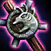

MAGICAL WEAPONS SINCE ITERATION 5.13 — A STATISTICAL REPORT.
Summary of 5.13 Changes
Not long ago, in iteration 5.13 of the Rift, changes were put in place that hoped to make a wider range of magical weapons (Ability Power items) enticing for magic users. The changes centered around the Needlessly Large Rod (NLR), a powerful and expensive component to those AP items that grant the highest amounts of raw magical power.

By making the NLR less expensive and reducing its AP bonus, Rift's Iterating Optimization Team (RIOT) hoped to make its high-power upgrades less obligatory; also to this end, other AP items with a focus on utility and special effects, such as Rylai's Crystal Scepter and Liandry's Torment, had their AP increased.
How Did Players Adapt?
In the opinion of the The Daily Rift, sufficient battles have been waged on the Rift for results of this AP experiment to present themselves. Did mages change the way they build up their power? Which items rose or fell in popularity? Should the Needlessly Large Rod be renamed the Somewhat Unnecessarily Large Rod?
Below is a table of statistics compiled using Rift matches before and after the AP item changes. Due to advances in table technology, specific tables can be conjured up for a particular champion; normal and ranked games can be included or excluded as well.
Pick Rate: The percentage of champions who built the item, from the champions who built any of the AP items.
Average Build Time: The average time at which champions acquired the item, as measured by the game clock.
Sell Rate: The percentage of champions who sold the item after buying it.
Average Build Position: The average position of the item in champion builds, where 1 means it was built first and 6 means it was built last.
For more details about these statistics, please refer to the supplementary material for this article.